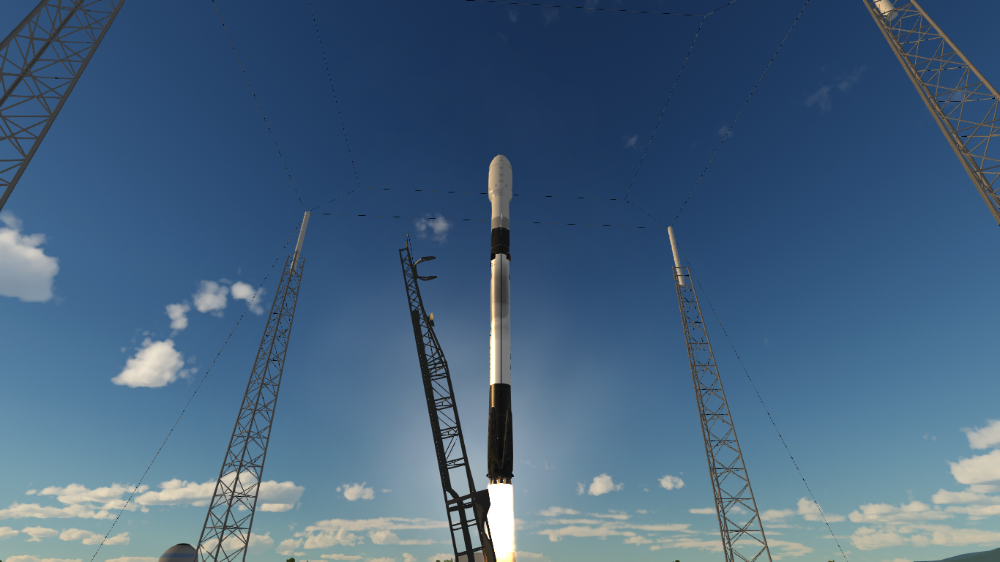
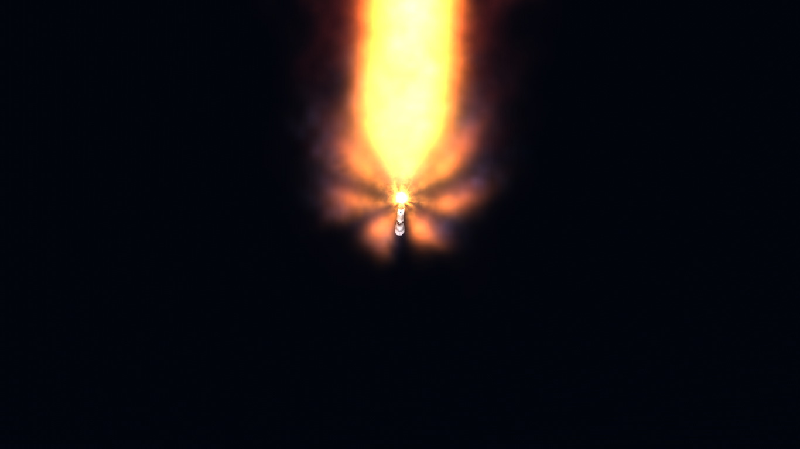
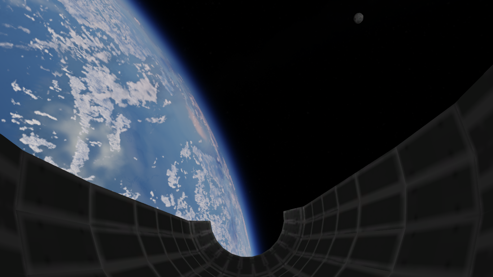
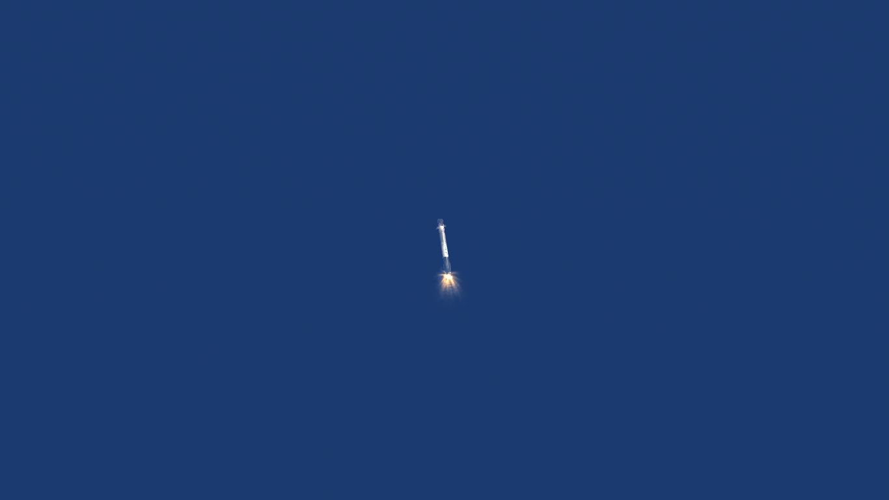
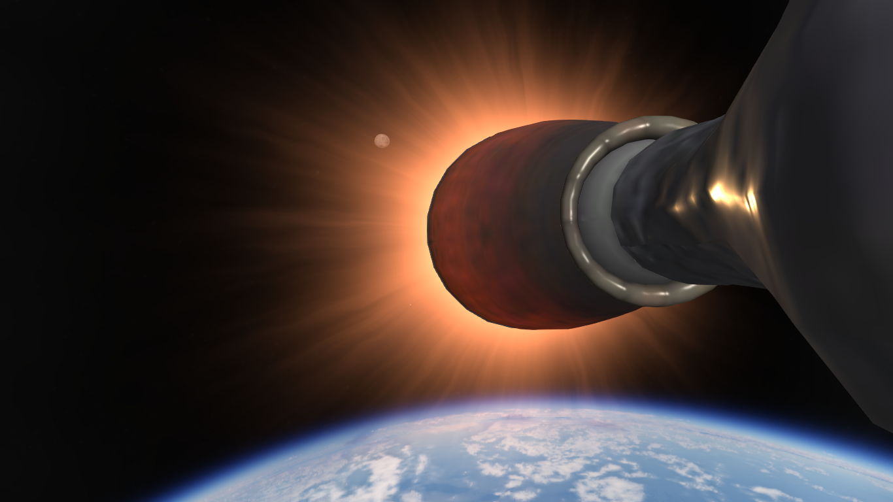
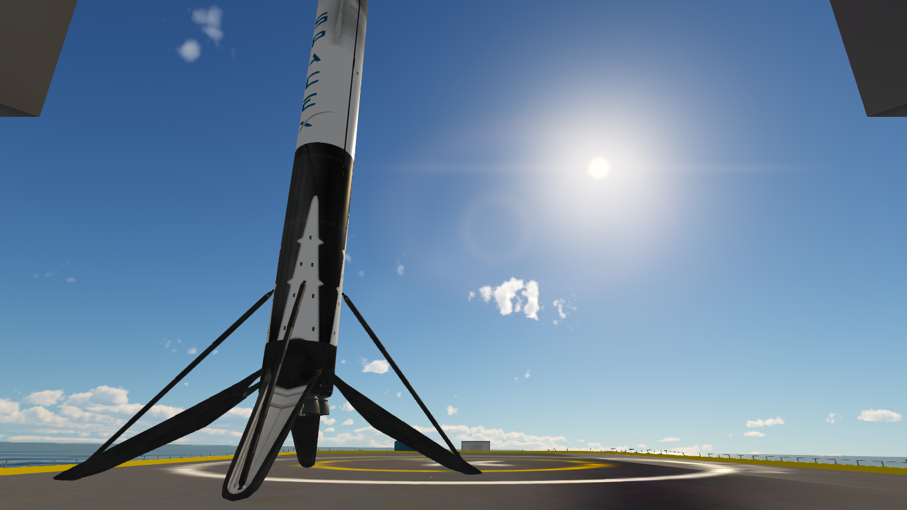
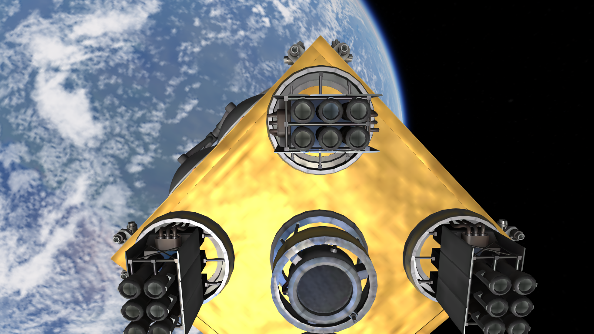

GPS-12
Vehículo: Falcon 9 Block 5
Fecha: 20 de septiembre de 2025
Estado: Éxito

Introducción
Halcon Space llevó a cabo con éxito el lanzamiento de la misión GPS-12 a bordo de su cohete Falcon 9 Block 5, desde el Complejo de Lanzamiento Espacial 40 (SLC-40).
La carga útil consistió en un satélite GPS de nueva generación, diseñado para ser insertado en una órbita de transferencia geoestacionaria. Estos satélites incorporan un sistema de propulsión propio que les permite corregir su órbita, lo que incrementa significativamente su masa en comparación con versiones anteriores.
La primera etapa B1075.7 logro realizár un aterrizaje sobre la barcaza maritima OCISLY situada a 143km del sitio de lanzamiento.
Detalles Técnicos
- Vehículo: Falcon 9 Block 5
- Altura del cohete: 70 m
- Propulsor: B1075.7
- Carga útil: Satélite GPS de nueva generación
- Órbita: GTO (Órbita de Transferencia Geoestacionaria)
- Recuperación: Éxito parcial sobre OCISLY.
Imágenes de la misión





